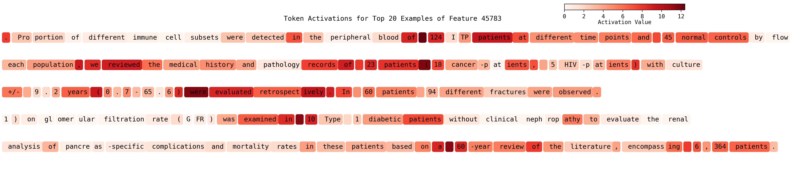
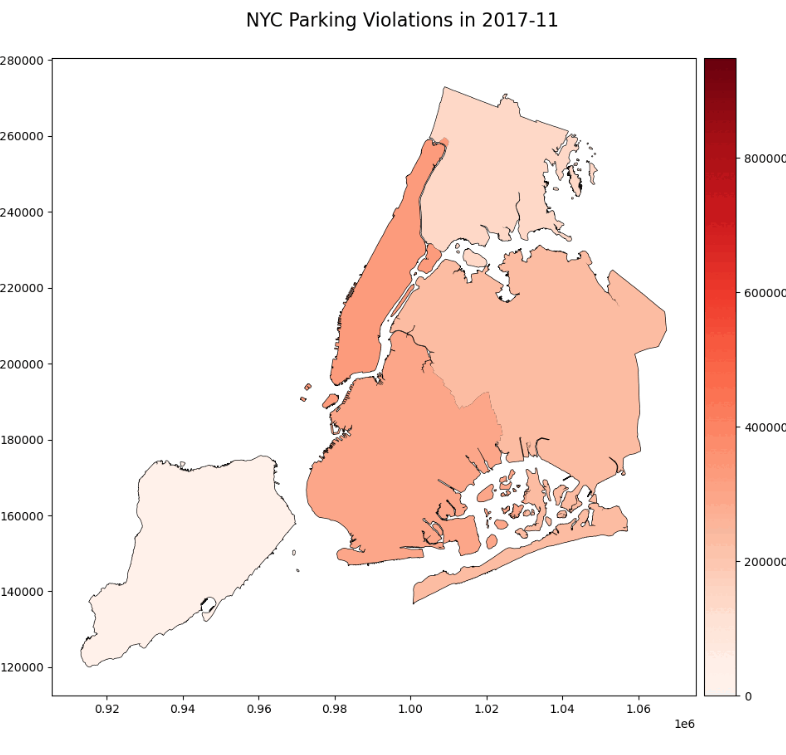
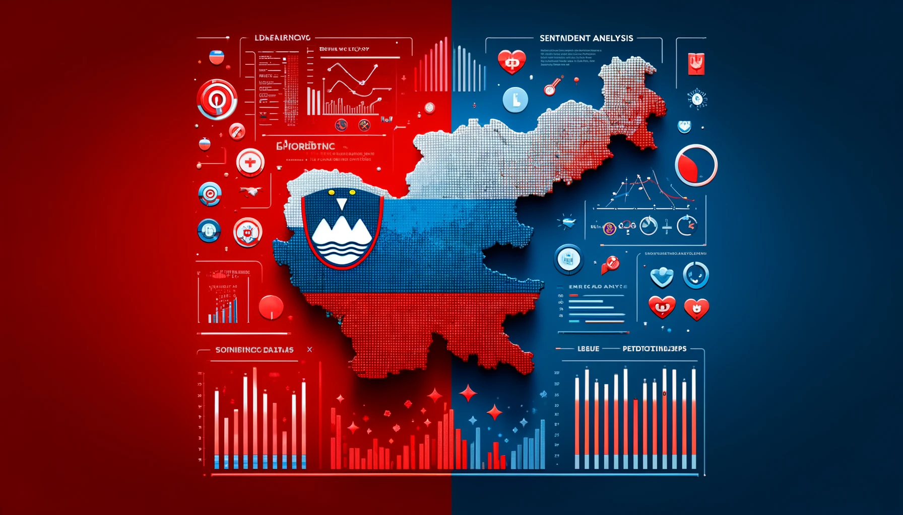
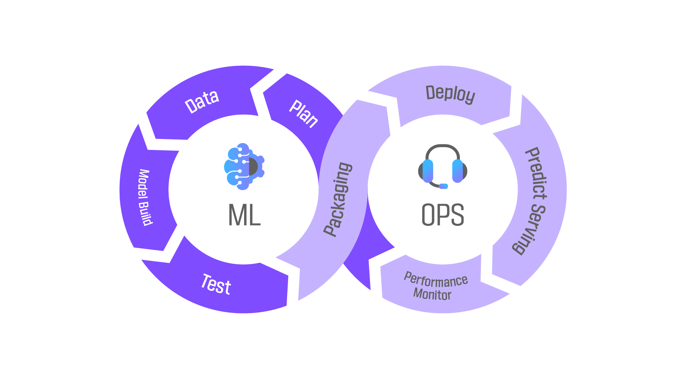
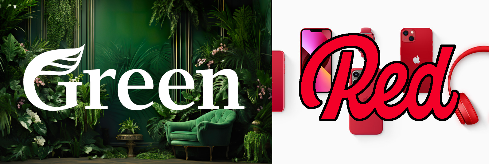
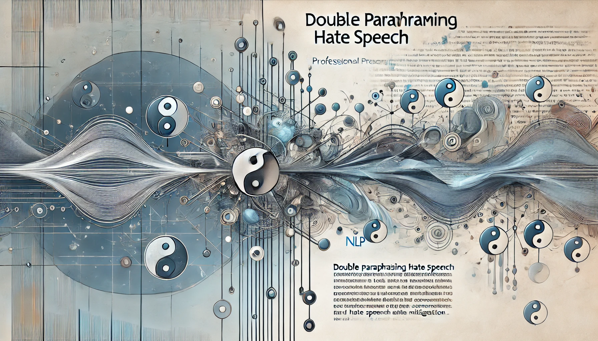

Projects

Scaling Monosemanticity
View on GitHub

NYC Violation Tickets
View on GitHub

Unbalanced Media
View on GitHub

Weather Prediction MLOps
View on GitHub

Compare Color Detectors
View on GitHub
Face Detection Study
View on GitHub

DPhate
View on GitHub